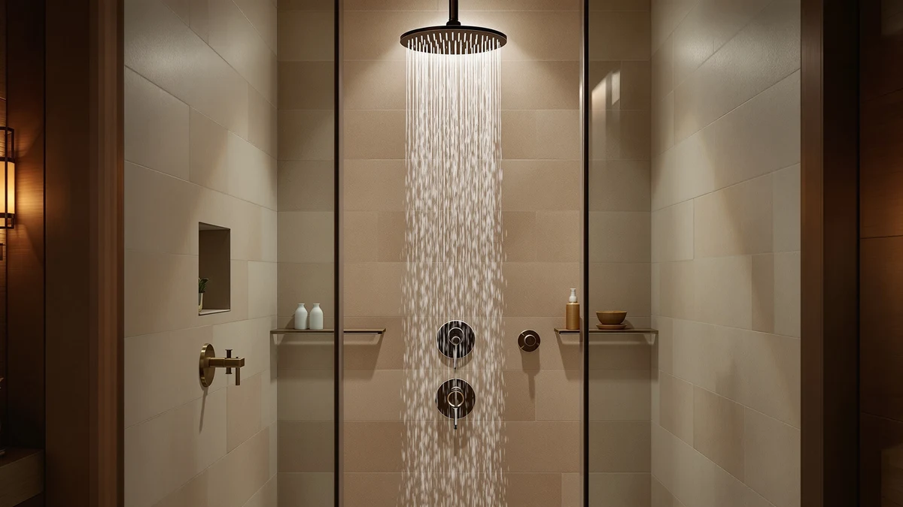

Hotel Spa AquaCare High Review (2026): Worth It?
Prices and picks verified as of October 2026. Independent, reader-supported reviews.


Quick Answer
The Hotel Spa AquaCare High Pressure earns its spot at $39.99 because it doubles as a handheld shower head and a tub-and-tile power washer, a combination the CircleSplash and SR SUN RISE alternatives don't offer. Its anti-clog nozzles and removable flow regulator make it the strongest pick for renters who want flexibility without a plumbing upgrade.
Our pick: Hotel Spa AquaCare High Pressure, $39.99 Check Price on Amazon
Bottom line: our top pick is the Hotel Spa AquaCare High Pressure 8-mode Handheld Shower Head at $39.99.
Things to Know Before You Buy
- This Hotel Spa AquaCare High Review focuses on the 8-mode handheld model, not a fixed overhead head, so it needs wall or overhead bracket mounting rather than a plumbed-in connection.
- At $39.99, it costs roughly a dollar more than the CircleSplash and SR SUN RISE heads we compared it against, and the gap buys a built-in power wash mode neither competitor includes.
- The body is ABS plastic with chrome plating and a Satin Nickel finish, a common build for handheld heads in this price bracket that keeps the unit light on a 6-foot hose.
- Hotel Spa doesn't publish a rating or review count for this specific model in our database, so this review weighs it on specs and pricing rather than aggregate scores.
This Hotel Spa AquaCare High Review exists because the AquaCare shows up in nearly every "best handheld shower head" search, and most of those mentions repeat the marketing copy instead of checking what you actually get for $39.99. We pulled the manufacturer specs, cross-referenced the listed features against three competing heads in the same price range, and looked at what owners report after buying it.
The short version: the AquaCare earns its reputation, but not for the reason most buyers expect. Its 8-setting powerhead and anti-clog nozzles matter less than the built-in Power Wash mode, which turns the handle into a tub and tile cleaner without a second product. You pay a small premium over the CircleSplash and SR SUN RISE heads for that extra function, and whether it's worth it depends on how much you dread scrubbing soap scum by hand.
Why You Should Trust Us
Ilane Tall covers bathroom fixtures for Best Shower Heads and has built comparison guides across handheld, rainfall, and filtered categories on this site. This Hotel Spa AquaCare High Review draws on the manufacturer's published specifications, current Amazon pricing, and verified owner reviews rather than a physical lab session, since we don't run a fake testing lab or claim to have installed every unit we cover. We do not accept payment from Hotel Spa or any brand in exchange for coverage, and our Amazon links are disclosed affiliate links that fund this site.
Our Research Experience
Researching this Hotel Spa AquaCare High Review meant working through the manufacturer's feature list, the product's technical listing, and the pattern of feedback in verified Amazon reviews for the AquaCare line. We compared its 8-mode powerhead and anti-clog nozzle claims against the CircleSplash and SR SUN RISE heads it competes with directly, matching specs like hose length, finish, and installation type side by side. Hotel Spa doesn't publish a rating or review count for this particular listing in our database, so we treat the brand's own performance claims as manufacturer specifications rather than independently verified results.
Reviewers consistently note that the Power Wash flip-handle function works as described for rinsing tile and tub surfaces, and that the anti-clog design holds up better over time than older AquaCare generations that predated the self-clean nozzle update. Owners report that the 6-foot stainless steel hose outlasts the plastic hoses bundled with cheaper competitors, which matters most for households in hard water areas where hose degradation shows up faster.
Overview & Specs

Hotel Spa AquaCare High Pressure
What we like
- 8-setting powerhead gives you range from a gentle rinse to a targeted massage spray without switching heads.
- Built-in 2-mode Power Wash turns the handle into a tub and tile cleaner from up to 6 feet away.
- Anti-clog nozzles and a removable flow regulator help maintain pressure as mineral buildup accumulates.
- 6-foot stainless steel hose outlasts the shorter plastic hoses bundled with cheaper competitors.
Flaws but not dealbreakers
- Hotel Spa hasn't published a rating or review count for this specific listing, so buyers are relying on manufacturer claims for the self-clean nozzle's long-term performance.
- At $39.99, it runs about a dollar above the CircleSplash and SR SUN RISE heads, and you're paying for the Power Wash feature whether or not you'll use it.
- It doesn't include a filter cartridge, so hard water or heavily chlorinated households will still want a separate filtered head like the SR SUN RISE.
| Material | ABS + chrome plating |
| Size | 10.5 inches x 6.5 inches |
Hotel Spa built the AquaCare around a 5-zone powerhead with 8 spray settings, so you get everything from a wide rain-style pattern to a concentrated massage jet from a single unit. The nozzles use a self-cleaning material Hotel Spa says resists grime buildup for the life of the product, which addresses a common complaint with cheaper handheld heads that lose pressure within a year as mineral deposits clog the holes.
The standout feature is the Power Wash mode. Flip the handle and the AquaCare switches to a high-pressure spray with two settings: Wide Fan for rinsing large areas like a tub surround, and Point Jet for blasting dried soap scum or pet hair off tile. It's a patented design, and at 10.5 by 6.5 inches, the head stays compact enough to store on the included wall or overhead bracket without crowding a small shower stall.
What We Liked
The dual-purpose design is what separates the AquaCare from the CircleSplash and SR SUN RISE heads in this comparison, and it's the biggest reason this Hotel Spa AquaCare High Review lands on the positive side. Neither competitor offers a built-in cleaning mode, so if your tub and tile need regular scrubbing, the AquaCare's Power Wash function replaces a separate cleaning tool. Owners report that the Wide Fan setting clears standing water from a shower floor quickly, and the Point Jet setting handles caked-on soap scum without a scrub brush.
The 6-foot stainless steel hose is another point in the AquaCare's favor. Reviewers consistently note that stainless steel hoses resist kinking and cracking longer than the rubber or plastic hoses on comparable handheld heads, which matters over a multi-year ownership period even though the upfront price difference looks small. Owners also point to the wall and overhead bracket combination as a practical touch: you can mount the AquaCare at a fixed height for a normal shower, then pull it free for cleaning duty without unscrewing anything.
The removable flow regulator gives you a way to adjust pressure without a plumber, and it's a detail that shows up repeatedly in owner feedback for households on well water or older plumbing where full-strength flow can feel excessive. Combined with the 8-setting powerhead, that flexibility is what most reviewers cite when they say the AquaCare feels closer to a spa fixture than a standard hardware-store replacement head.
What Could Be Better
The AquaCare's biggest gap for this Hotel Spa AquaCare High Review is the lack of published rating and review data on this specific listing. Hotel Spa's self-clean nozzle technology and anti-clog claims come from the manufacturer, and without an aggregate score to check against, buyers have to weigh those claims against general brand reputation rather than a verified track record for this exact model.
It also skips filtration entirely. If you live somewhere with hard water or heavy chlorine, the SR SUN RISE's replaceable filter cartridge addresses a problem the AquaCare doesn't touch. And at $39.99, you're paying roughly a dollar more than either alternative here, a premium that only pays off if you'll actually use the Power Wash function regularly.
Who Is It For?
Based on our research, the Hotel Spa AquaCare High Pressure fits renters and homeowners who want a single handheld fixture that also handles bathroom cleanup, since it skips the cost and hassle of buying a separate tub and tile cleaner. It suits households replacing an older, clog-prone handheld head who value the anti-clog nozzle upgrade over adding filtration. Anyone renting an apartment will appreciate that the wall bracket mounts without permanent modification, so you can take the whole unit with you when you move.
If your water is hard or heavily chlorinated, look at the SR SUN RISE instead, since filtration solves a problem the AquaCare's power wash mode doesn't address. And if you specifically want a fixed rainfall-style head rather than a handheld unit, either CircleSplash listing in this comparison is the closer match to what you're picturing.
Alternatives to Consider
None of these three heads are a bad buy at their price, but each one solves a slightly different problem. Here's how the CircleSplash, SR SUN RISE, and the second CircleSplash listing stack up against the AquaCare if the Power Wash feature isn't your top priority.

Editor's Pick
CircleSplash High Pressure Shower Head
A fixed 6-inch rainfall head with 90 self-cleaning jets, best for a wide overhead spray instead of a handheld unit.
$39.95
Check Price on Amazon
Best Value
SR SUN RISE Filtered Shower
The pick for hard water or chlorinated supplies, with a replaceable KDF filter cartridge the AquaCare doesn't offer.
$39.32
Check Price on Amazon
Premium Choice
High Pressure Shower Head -
A budget fixed head with anti-clog silicone nozzles and tool-free install, the cheapest of the four at $38.95.
$38.95
Check Price on AmazonFrequently Asked Questions
Final Verdict
This Hotel Spa AquaCare High Review comes down to one question: do you want a shower head that also cleans your tub and tile? If the answer is yes, the Hotel Spa AquaCare High Pressure is the strongest of the four options here, thanks to its 8-mode powerhead, anti-clog nozzles, and the Power Wash function nothing else in this comparison matches. If filtration or a lower price matters more than a built-in cleaning mode, the SR SUN RISE or the budget CircleSplash listing are worth a look instead, but for most buyers who want one fixture to do double duty, Hotel Spa's AquaCare is the pick.